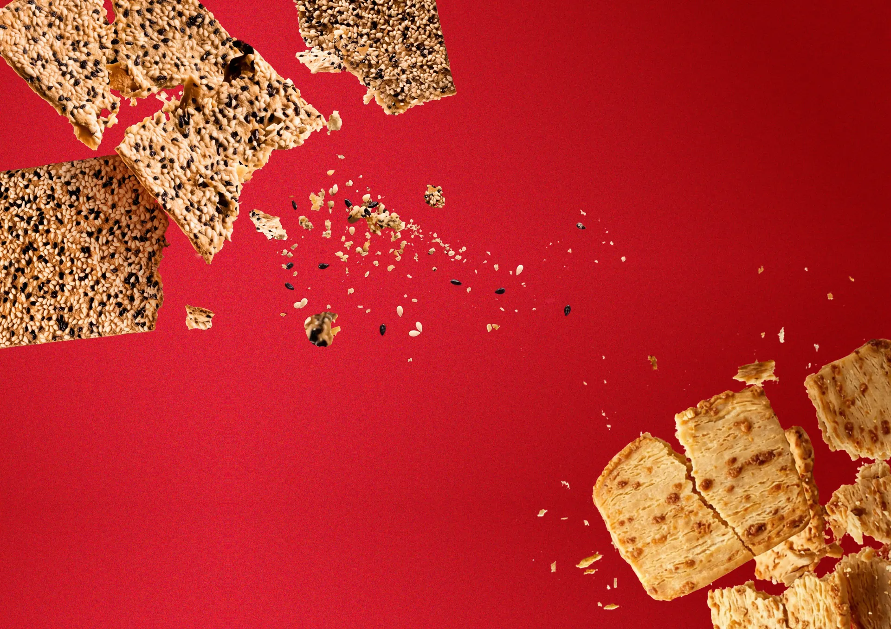

Crispbread, crackers and bakery snacks manufacturer in PolandSmall bites.
Huge opportunities.
GaliCrisp is the brand of Piekarnia Galicyjska. We bake under our own brand and under yours, for retailers, distributors and foodservice in Poland and in more than 20 export markets.
- 30+years of baking experience
- 20+export markets
- 5product categories, 40 catalogue items
- A+BRCGS audit grade
Five categories, one bakery
Every category has its own shelf and its own colour. Pick one to see its lines, flavours and logistics data.
- Crispbread6 lines, 18 productsSix crispbread lines in 130 to 200 g packs, from the everyday seeded slice to Protein with up to 27 g of protein per 100 g.See the range
- Flatbread crisps1 line, 6 productsLong, thin flatbread crisps in 130 g packs. Six flavours in one consistent range, from 3 Seeds with sea salt to Sesame and Beetroot.See the range
- Crackers2 lines, 5 productsThin, crisp crackers baked with sourdough for a deeper, rounder flavour. Source of fibre, low in sugars.See the range
- Bakery snacks2 lines, 6 productsCrunchy focaccia in two formats: 120 g sticks for dipping and 100 g bite-size squares. Three flavours, low in sugars.See the range
- Savoury biscuits2 lines, 5 productsFlaky laminated pastry with real butter and matured Gouda. Crispies 90 g and Straws 100 g, a premium snack for wine and beer.See the range
Up to 27 g of protein per 100 g
Protein Crispbread 180 g keeps the crunch of our classic slice and gives buyers a strong reason to list it on the high-protein shelf. Two flavours, 3 Seeds and Onion, in a pack with a resealable label.
See the Protein line
Onion
Your brand, our bakery
We make crispbread, flatbread crisps, sourdough crackers, focaccia snacks and butter savouries under our customers’ brands. Recipe, weight, packaging and logistics are matched to the retailer or distributor.
Private labelBrief
Category, market, price positioning and planned volume.
Recipe and samples
We pick a recipe from our portfolio or develop a new one, then ship samples.
Packaging
Format, weight, slice count, display carton and a label for the target market.
Trial run
A trial batch, quality sign-off and an agreed specification.
Supply
Regular production and pallet shipments to distribution centres.
Quality you can verify
We bake in Jeżowe, Poland, in a plant certified to the standards European retailers ask for. Copies of our certificates are available to partners on request.
Certificates and quality- BRCGSGlobal Standard for Food Safety, grade A+
- IFS FoodHigher Level
- BIOEU organic certification PL-EKO-07

Frequently asked questions
Does GaliCrisp make private label products?
Yes. We make crispbread, flatbread crisps, sourdough crackers, focaccia snacks and butter savouries under our customers’ brands, matching recipe, weight, packaging and logistics to each retailer or distributor.
Which certificates does the plant hold?
BRCGS Food Safety with grade A+, IFS Food at Higher Level and EU organic certification (PL-EKO-07). Copies are available to partners on request.
How much protein does Protein Crispbread contain?
Protein Crispbread 180 g contains up to 27 g of protein per 100 g, made for retailers growing their functional and sports nutrition shelf.
What are flatbread crisps?
Thin, flat crispbread in a 130 g pack, available in 6 flavours. Lighter in texture than a classic slice, they work as a snack with cheese and spreads.
Can I order samples?
Yes. We ship samples to retailers, distributors and foodservice companies after a request through the form or to info@galicrisp.pl. Tell us the product category, market and planned volume.
Which markets do you export to?
Our products reach more than 20 export markets. We work with retail chains, distributors, wholesalers and foodservice companies in Poland and abroad.
Let’s talk about your shelf
Tell us which category you are looking for and for which market. We reply with an offer, the specification and a sample shipping date.